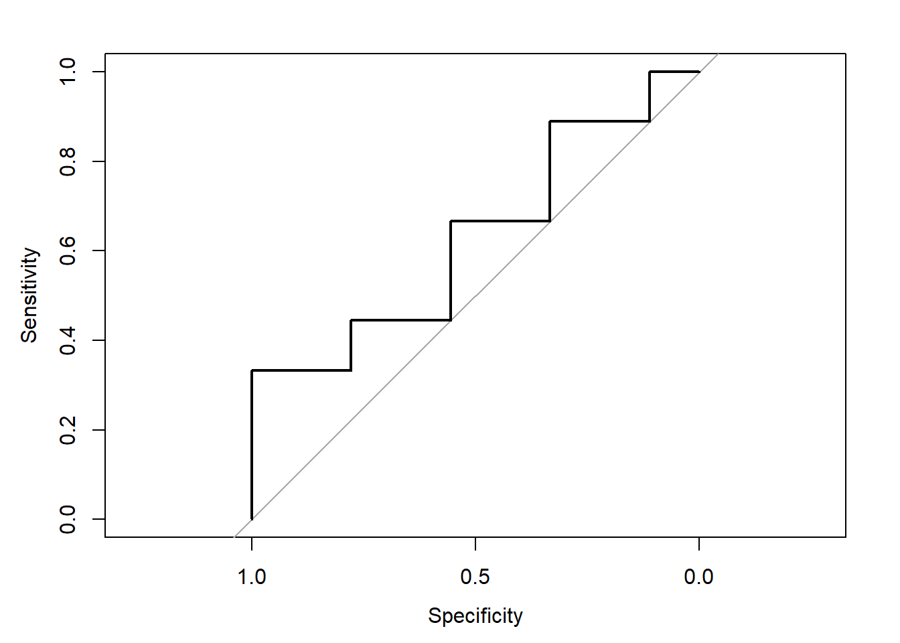

caesarian<-read.csv("caesarian.csv", header=TRUE)
caesarian$delivery_number<- as.factor (caesarian$delivery_number)
caesarian$delivery_time <- as.factor(caesarian$delivery_time)
caesarian$blood_pressure <-as.factor(caesarian$blood_pressure)
caesarian$heart_problem <- as.factor(caesarian$heart_problem)
caesarian$Caesarian <- as.factor(caesarian$Caesarian)HW8
Problem 1. The dataset caeserian.csv contains information about Caesarian section results of 80 pregnant women with the most important characteristics of delivery problems in the medical field. It gives information on Age,Delivery number (1, 2, 3,4),Delivery time classified as (0, 1, 2) with 0 = timely, 1 = premature, 2 = latecomer,Blood Pressure (0 = low, 1 = normal, 2 = high),Heart Problem (0 = apt, 1 = inept), Caesarian(0 = No, 1 = Yes) - response variable.
Answer the following questions.
- Use the predictor Age in a binary logit model for the incidence of Caesarian. Interpret the results.
set.seed(123457)
train.prop <- 0.80
strats <- caesarian$Caesarian
rr <- split(1:length(strats), strats)
idx <- sort(as.numeric(unlist(sapply(rr,
function(x) sample(x, length(x)*train.prop)))))
caesarian.train <- caesarian[idx, ]
caesarian.test <- caesarian[-idx, ]age_pred <- glm(Caesarian ~ age, data = caesarian.train, family = binomial(link="logit"))
summary(age_pred)
Call:
glm(formula = Caesarian ~ age, family = binomial(link = "logit"),
data = caesarian.train)
Coefficients:
Estimate Std. Error z value Pr(>|z|)
(Intercept) -0.67091 1.40960 -0.476 0.634
age 0.03445 0.04994 0.690 0.490
(Dispersion parameter for binomial family taken to be 1)
Null deviance: 86.046 on 62 degrees of freedom
Residual deviance: 85.566 on 61 degrees of freedom
AIC: 89.566
Number of Fisher Scoring iterations: 4The intercept represents the log-odds of Caesaeian when Age is zero. The coefficient for Age is 0.03445, with a standard error of 0.04994 This means that for each one-unit increase in Age, the log-odds of having a Caesarian increases by 0.03445 However, the p-value associated with Age is 0.490, which is greater than the significant level (0.05). This suggests that Age may not have a statistically significant predictor of Caesarian in this model.
The output also shows the null deviance of 86.046 on 62 degree of freedom which indicated how well the response variable can be predicted by a model with only an intercept term, and the residual deviance of 85.566 on 61 degree of freedom, which is show how well the response variable can be predicted by a model with the intercept and the selected predictor variables. Since the residual deviance is smaller than the null deviance, it suggests that the model with the Predictor variable “Age” is better fit than the null model. The AIC is 89.566
null.logit<-glm(Caesarian~1, data=caesarian.train, family = binomial(link="logit"))
summary(null.logit)
Call:
glm(formula = Caesarian ~ 1, family = binomial(link = "logit"),
data = caesarian.train)
Coefficients:
Estimate Std. Error z value Pr(>|z|)
(Intercept) 0.2877 0.2546 1.13 0.258
(Dispersion parameter for binomial family taken to be 1)
Null deviance: 86.046 on 62 degrees of freedom
Residual deviance: 86.046 on 62 degrees of freedom
AIC: 88.046
Number of Fisher Scoring iterations: 4full.logit <- glm(Caesarian ~ . , data = caesarian.train, family = "binomial"(link="logit"))
summary(full.logit)
Call:
glm(formula = Caesarian ~ ., family = binomial(link = "logit"),
data = caesarian.train)
Coefficients:
Estimate Std. Error z value Pr(>|z|)
(Intercept) 2.10729 1.96780 1.071 0.2842
age -0.02548 0.06620 -0.385 0.7003
delivery_number2 1.15576 0.83826 1.379 0.1680
delivery_number3 1.12106 1.07226 1.046 0.2958
delivery_number4 17.82109 2313.46728 0.008 0.9939
delivery_time1 -1.33456 0.86234 -1.548 0.1217
delivery_time2 -1.78609 0.88845 -2.010 0.0444 *
blood_pressure1 -2.54558 1.00352 -2.537 0.0112 *
blood_pressure2 -1.21159 0.93907 -1.290 0.1970
heart_problem1 1.73554 0.68902 2.519 0.0118 *
---
Signif. codes: 0 '***' 0.001 '**' 0.01 '*' 0.05 '.' 0.1 ' ' 1
(Dispersion parameter for binomial family taken to be 1)
Null deviance: 86.046 on 62 degrees of freedom
Residual deviance: 62.231 on 53 degrees of freedom
AIC: 82.231
Number of Fisher Scoring iterations: 16- Among the remaining four predictors, which along with Age best explains the incidence of a Caeserian section? What is the reduction in deviance by including this additional predictor?
both.logit<-step(null.logit, list(lower=formula(null.logit),upper=formula(full.logit)),direction="both", trace=0, data=caesarian.train)
formula(both.logit)Caesarian ~ heart_problemIn the following code, we can find out the best predictor that model with the smallest residual deviance. We using for-loop to fit the predictors into different model and find the difference between the residual deviance reduction.
deviance_reductions <- numeric()
predictors <- c("delivery_number", "delivery_time", "blood_pressure", "heart_problem")
for (predictor in predictors) {
model <- glm(Caesarian ~ age + as.factor(get(predictor)), data = caesarian.train, family = "binomial" (link = "logit"))
deviance_reductions <- c(deviance_reductions, deviance(age_pred) - deviance(model))
}
best_predictor <- predictors[which.max(deviance_reductions)]
best_deviance_reduction <- max(deviance_reductions)
cat("The variable that along with Age best explains the incidence of a Caesarian section is",best_predictor,"\n")The variable that along with Age best explains the incidence of a Caesarian section is heart_problem print(best_deviance_reduction)[1] 10.15274age_pred <- glm(Caesarian ~ age+heart_problem, data = caesarian.train, family = "binomial"(link="logit"))
summary(age_pred)
Call:
glm(formula = Caesarian ~ age + heart_problem, family = binomial(link = "logit"),
data = caesarian.train)
Coefficients:
Estimate Std. Error z value Pr(>|z|)
(Intercept) -0.482326 1.550942 -0.311 0.75581
age 0.003674 0.056000 0.066 0.94769
heart_problem1 1.810558 0.610215 2.967 0.00301 **
---
Signif. codes: 0 '***' 0.001 '**' 0.01 '*' 0.05 '.' 0.1 ' ' 1
(Dispersion parameter for binomial family taken to be 1)
Null deviance: 86.046 on 62 degrees of freedom
Residual deviance: 75.413 on 60 degrees of freedom
AIC: 81.413
Number of Fisher Scoring iterations: 4In the above coding, we first initializes an empty numeric vector to store the reduction in deviance for each predictor and create a vector that contains the names of the remain four predictors we want to assess. The for-loop is to evaluate each predictor in the context of a logistic regression model. We have calculate the reduction in deviance by subtracting the deviance of the model with only Age (age_pred) from the deviance of the model that includes Age and the other predictor. After evaluating all predictors, uses the ‘which.max’ function to identify the index of the maximum reduction in deviance, and extracts the corresponding predictor name from the vector.
From the result, we can see that the predictor “heart_problem” with predictor “Age” have the best explains the incidence of a Caesarian section. The reduction in deviance by including predictor “heart_problem” is 10.15274 (85.566 - 75.413).
- Fit and interpret a binary logit regression for the incidence of Caeserian section using all five predictors.
full.logit <- glm(Caesarian ~ . , data = caesarian.train, family = "binomial"(link="logit"))
summary(full.logit)
Call:
glm(formula = Caesarian ~ ., family = binomial(link = "logit"),
data = caesarian.train)
Coefficients:
Estimate Std. Error z value Pr(>|z|)
(Intercept) 2.10729 1.96780 1.071 0.2842
age -0.02548 0.06620 -0.385 0.7003
delivery_number2 1.15576 0.83826 1.379 0.1680
delivery_number3 1.12106 1.07226 1.046 0.2958
delivery_number4 17.82109 2313.46728 0.008 0.9939
delivery_time1 -1.33456 0.86234 -1.548 0.1217
delivery_time2 -1.78609 0.88845 -2.010 0.0444 *
blood_pressure1 -2.54558 1.00352 -2.537 0.0112 *
blood_pressure2 -1.21159 0.93907 -1.290 0.1970
heart_problem1 1.73554 0.68902 2.519 0.0118 *
---
Signif. codes: 0 '***' 0.001 '**' 0.01 '*' 0.05 '.' 0.1 ' ' 1
(Dispersion parameter for binomial family taken to be 1)
Null deviance: 86.046 on 62 degrees of freedom
Residual deviance: 62.231 on 53 degrees of freedom
AIC: 82.231
Number of Fisher Scoring iterations: 16From the full fitted model, the intercept represents the log-odds of Caesarian when all predictor variables are zero. For each one-unit increase in Age, the log-odds of having a Caesarian decrease by 0.02548, but the p-value for Age is not significant since the p-value of Age is 0.7003 which is larger than the significant level (0.05), suggesting that Age might not be a significant predictor in this model.
The other predictors also have coefficients and p-values, all of them have a larger p-value than the significant level except predictor delivery_time2, blood_pressure1 and heart_problem1, have the p-value which smaller than the significant level (0.05) and indicates that they are statistically significant impact to Caesarian.
The null deviance of model is 86.046 on 62 d.f. and residual deviance of model is 62.231 on 53 d.f..The deviance values represent goodness-of-fit statistics. The residual deviance is smaller than the null deviance, which indicate that the model with five predictors is better fit than the null model. And the AIC is 82.231
- Construct the fitted values from the model in (c). Assume that the fit corresponds to Caesarian = 1 if the estimated logit exceeds 0.65, else assume Caesarian = 0. Then, construct a confusion (or misclassification) table and discuss what it says about the model fit.
pred.full <- predict(full.logit, newdata = caesarian.test, type = "response")
(table.full<-table(pred.full>0.65, caesarian.test$Caesarian))
0 1
FALSE 5 5
TRUE 2 5library(caret)Loading required package: ggplot2Loading required package: latticef<-ifelse(pred.full>0.65,1,0)
(cm.full<-confusionMatrix(reference=as.factor(caesarian.test$Caesarian),data=as.factor(f), mode="everything"))Confusion Matrix and Statistics
Reference
Prediction 0 1
0 5 5
1 2 5
Accuracy : 0.5882
95% CI : (0.3292, 0.8156)
No Information Rate : 0.5882
P-Value [Acc > NIR] : 0.6022
Kappa : 0.2013
Mcnemar's Test P-Value : 0.4497
Sensitivity : 0.7143
Specificity : 0.5000
Pos Pred Value : 0.5000
Neg Pred Value : 0.7143
Precision : 0.5000
Recall : 0.7143
F1 : 0.5882
Prevalence : 0.4118
Detection Rate : 0.2941
Detection Prevalence : 0.5882
Balanced Accuracy : 0.6071
'Positive' Class : 0
The confusion table in above is used to assess the performance of the logistic regression model. It shows that how well the model’s predictions match the actual outcome.
In the confusion matrix, we can see that there are 5 True Negative that correctly predicted Negative. 5 True Positive that correctly predicted Positive. 5 False Negative that incorrectly predicted Negative and 2 False Positive that incorrectly predicted Positive.
The accuracy of full model is 58.82%. Sensitivity and Specificity of the model are 71.43% and 50% respectively.This means the model correctly identifies Caesarian cases 71.43% of the time and the model correctly identifies non-Caesarian cases 50% of the time. The F1 score is 58.82% and Recall is 71.43%. We can see that the Sensitivity and recall are high and prove that this model can make a better prediction and accuracy result.
Problem 2.
levee.data<-read.csv("leveefailure.csv")
cols_with_na <- colnames(levee.data)[colSums(is.na(levee.data)) > 0]
# Drop columns with missing values
levee.data <- levee.data[, !colnames(levee.data) %in% cols_with_na]
levee.data$Failure<-as.factor(levee.data$Failure)
levee.data$Year<-as.factor(levee.data$Year)
levee.data$Sediments<-as.factor(levee.data$Sediments)
levee.data$Borrowpit<-as.factor(levee.data$Borrowpit)
levee.data$Meander<-as.factor(levee.data$Meander)
levee.data$Landcover<-as.factor(levee.data$Landcover)
levee.data$Revetment<-as.factor(levee.data$Revetment)In the data, since we found out that there is a NaN column, we would drop this column as data cleaning and better analysis the data.
table(levee.data$Failure)
0 1
41 41 We can see that the distribution of Failure, which there are 41 observations that Failure = 1 and 41 observations that Failure = 0.
We would train the data into 80-20 split to train data and test data.
set.seed(123457)
train.prop <- 0.80
strats <- levee.data$Failure
rr <- split(1:length(strats), strats)
idx <- sort(as.numeric(unlist(sapply(rr,
function(x) sample(x, length(x)*train.prop)))))
levee.train <- levee.data[idx, ]
levee.test <- levee.data[-idx, ]summary(levee.train$Failure)/nrow(levee.train) 0 1
0.5 0.5 summary(levee.train$Failure)/nrow(levee.train) 0 1
0.5 0.5 We can see that the proportions of the two level of the response Failure are the same in the train, test and the entire data since all of them is 0.5.
levee_null.logit <- glm(Failure~1, data = levee.train, family = binomial(link = "logit"))
summary(levee_null.logit)
Call:
glm(formula = Failure ~ 1, family = binomial(link = "logit"),
data = levee.train)
Coefficients:
Estimate Std. Error z value Pr(>|z|)
(Intercept) 1.665e-16 2.500e-01 0 1
(Dispersion parameter for binomial family taken to be 1)
Null deviance: 88.723 on 63 degrees of freedom
Residual deviance: 88.723 on 63 degrees of freedom
AIC: 90.723
Number of Fisher Scoring iterations: 2In the above is the null model. We an see that the coefficient of intercept is 1.665e-16 and the p-value is 1 which is much larger than the significant level (0.05) and suggests the intercept is not significant.
The null deviance and residual deviance is 88.723 on 63 d.f. The AIC is 90.723.
full.logit <- glm(Failure ~ . ,data = levee.train,
family = binomial(link = "logit"))Warning: glm.fit: fitted probabilities numerically 0 or 1 occurredsummary(full.logit)
Call:
glm(formula = Failure ~ ., family = binomial(link = "logit"),
data = levee.train)
Coefficients:
Estimate Std. Error z value Pr(>|z|)
(Intercept) 5.087e+01 5.841e+03 0.009 0.9931
Year1910 9.156e-01 1.657e+00 0.553 0.5805
Year1937 3.579e+01 3.480e+03 0.010 0.9918
Rivermile -5.264e-02 2.568e-02 -2.050 0.0404 *
Sediments1 -1.401e+00 1.563e+00 -0.896 0.3701
Borrowpit1 -1.933e+01 3.480e+03 -0.006 0.9956
Meander2 -1.132e+00 2.236e+00 -0.506 0.6125
Meander3 2.182e+00 2.632e+00 0.829 0.4071
Meander4 8.727e-02 1.681e+00 0.052 0.9586
ChannelWidth 3.053e-03 1.506e-03 2.028 0.0426 *
Floodwaywidth -6.295e-04 4.077e-04 -1.544 0.1225
ConstrictionFactor -2.663e+00 1.629e+00 -1.635 0.1021
Landcover2 -2.131e+01 5.841e+03 -0.004 0.9971
Landcover3 -2.073e+01 5.841e+03 -0.004 0.9972
Landcover4 -1.908e+01 5.841e+03 -0.003 0.9974
VegWidth -2.866e-04 6.017e-04 -0.476 0.6339
Sinuosity 6.575e+00 3.060e+00 2.149 0.0317 *
Dredging -2.250e-05 1.048e-05 -2.148 0.0318 *
Revetment1 -1.794e+01 5.453e+03 -0.003 0.9974
---
Signif. codes: 0 '***' 0.001 '**' 0.01 '*' 0.05 '.' 0.1 ' ' 1
(Dispersion parameter for binomial family taken to be 1)
Null deviance: 88.723 on 63 degrees of freedom
Residual deviance: 34.336 on 45 degrees of freedom
AIC: 72.336
Number of Fisher Scoring iterations: 18In the above table, we have fit a binary regression witha logit link to the training data in levee.train. It is the full model that the response Failure and the model includes all the predictors.
We can see that there are several variables are statisticlly significant which are “loan”, “contactunknown”, “month”, “duration”, “campaign” and “poutcomesuccess”, which are have smaller p-value than smaller than the significant level (0.05). Moreover, the variable “housing” is marginally significant which have the p-value (0.0099561) suggesting that having a housing loan may have a modest effect on the log-odds of “Failure”.
Since the residual deviance (34.336) is smaller than the null deviance(88.723), it suggests that the model with all the predictors have a better fit than a null model. The AIC is 72.336 which can be used for model comparison.
Then, we will do the variable selection that using the option direction = “both” in the step() function, which implies both forward and backward selection.
levee_both.logit <- step(full.logit, list(lower=formula(levee_null.logit),upper=formula(full.logit)),direction="both",trace=0, data = levee.train)Warning: glm.fit: fitted probabilities numerically 0 or 1 occurred
Warning: glm.fit: fitted probabilities numerically 0 or 1 occurred
Warning: glm.fit: fitted probabilities numerically 0 or 1 occurred
Warning: glm.fit: fitted probabilities numerically 0 or 1 occurred
Warning: glm.fit: fitted probabilities numerically 0 or 1 occurred
Warning: glm.fit: fitted probabilities numerically 0 or 1 occurred
Warning: glm.fit: fitted probabilities numerically 0 or 1 occurred
Warning: glm.fit: fitted probabilities numerically 0 or 1 occurred
Warning: glm.fit: fitted probabilities numerically 0 or 1 occurredformula(levee_both.logit)Failure ~ Year + Rivermile + Borrowpit + ChannelWidth + Floodwaywidth +
ConstrictionFactor + Landcover + Sinuosity + Dredgingsummary(levee_both.logit)
Call:
glm(formula = Failure ~ Year + Rivermile + Borrowpit + ChannelWidth +
Floodwaywidth + ConstrictionFactor + Landcover + Sinuosity +
Dredging, family = binomial(link = "logit"), data = levee.train)
Coefficients:
Estimate Std. Error z value Pr(>|z|)
(Intercept) 4.760e+01 3.652e+03 0.013 0.98960
Year1910 3.264e-01 1.353e+00 0.241 0.80943
Year1937 3.531e+01 2.161e+03 0.016 0.98696
Rivermile -4.999e-02 2.050e-02 -2.438 0.01475 *
Borrowpit1 -1.918e+01 2.161e+03 -0.009 0.99292
ChannelWidth 2.670e-03 1.009e-03 2.646 0.00813 **
Floodwaywidth -7.438e-04 3.515e-04 -2.116 0.03436 *
ConstrictionFactor -1.790e+00 1.150e+00 -1.556 0.11975
Landcover2 -2.107e+01 3.651e+03 -0.006 0.99540
Landcover3 -1.937e+01 3.651e+03 -0.005 0.99577
Landcover4 -1.890e+01 3.651e+03 -0.005 0.99587
Sinuosity 6.563e+00 2.344e+00 2.800 0.00512 **
Dredging -2.106e-05 7.747e-06 -2.719 0.00655 **
---
Signif. codes: 0 '***' 0.001 '**' 0.01 '*' 0.05 '.' 0.1 ' ' 1
(Dispersion parameter for binomial family taken to be 1)
Null deviance: 88.723 on 63 degrees of freedom
Residual deviance: 38.575 on 51 degrees of freedom
AIC: 64.575
Number of Fisher Scoring iterations: 17Stepwise selection for the leveefailure data uses the above code and selects a model whose coefficients are shown above. We can see that this model selects a model with 6 out of 13 predictors.
The intercept represents the log-odds of the response variable “Failure” when all predictor variables are set to zero. And the intercept is not statisitcally significant. Moreover, Sinuousity, ChannelWidth and Dredging are also the significant variable in the model since the p-value is smaller than the significant level (0.05).However, Landcover, Year and Borrowpit have the larger p-value than the significant level (0,05), which is suggest that they are not significant. It has been selected might because they might highly correlated with one or more of the other predictor variables in the model, or since the smaller dataset that the model may not have enough statistical power to detect smaller effects, making some variables appear less significant.
Overall, the model’s goodness of fit is evaluated using the null deviance, residual deviance and AIC. Since the residual deviance is smaller than the null deviance,although the residual deviance of both logit model is higher than the full model, but it has lower AIC value (64.575) for the model with predictor suggests that both of the model are better fit and we can check the accuracy, sensitivity and specifity to decide which model is the best model to make prediction.
pred.both <- predict(levee_both.logit, newdata = levee.test, type="response")
pred.full <- predict(full.logit, newdata = levee.test, type="response")library(caret)
b_both<-ifelse(pred.both>0.5, 1, 0)
cm.both <- confusionMatrix(reference=as.factor(levee.test$Failure),data=as.factor(b_both), mode="everything")
cm.bothConfusion Matrix and Statistics
Reference
Prediction 0 1
0 5 4
1 4 5
Accuracy : 0.5556
95% CI : (0.3076, 0.7847)
No Information Rate : 0.5
P-Value [Acc > NIR] : 0.4073
Kappa : 0.1111
Mcnemar's Test P-Value : 1.0000
Sensitivity : 0.5556
Specificity : 0.5556
Pos Pred Value : 0.5556
Neg Pred Value : 0.5556
Precision : 0.5556
Recall : 0.5556
F1 : 0.5556
Prevalence : 0.5000
Detection Rate : 0.2778
Detection Prevalence : 0.5000
Balanced Accuracy : 0.5556
'Positive' Class : 0
For the confusion matrix above, there are 5 true negative and 5 true positive, that correctly determine 10 cases. However, there are 4 instances that determine to be positive incorrectly which is the false positive and 4 false negative, that have 8 cases that is incorrectly predicted. The accuracy of the both model is 55.56%. Sensitivity, Specificity and F1 score of this model are also 55.56%.
b_full<-ifelse(pred.full>0.5, 1, 0)
cm.full <- confusionMatrix(reference=as.factor(levee.test$Failure),data=as.factor(b_full), mode="everything")
cm.fullConfusion Matrix and Statistics
Reference
Prediction 0 1
0 5 3
1 4 6
Accuracy : 0.6111
95% CI : (0.3575, 0.827)
No Information Rate : 0.5
P-Value [Acc > NIR] : 0.2403
Kappa : 0.2222
Mcnemar's Test P-Value : 1.0000
Sensitivity : 0.5556
Specificity : 0.6667
Pos Pred Value : 0.6250
Neg Pred Value : 0.6000
Precision : 0.6250
Recall : 0.5556
F1 : 0.5882
Prevalence : 0.5000
Detection Rate : 0.2778
Detection Prevalence : 0.4444
Balanced Accuracy : 0.6111
'Positive' Class : 0
For the confusion matrix above, there are 5 true negative and 6 true positive. There are 11 instances that determine to be positive incorrectly which is the 3 false positive and 4 false negative that have 7 cases are incorrectly predicted. The accuracy of full model is 61.11%. Sensitivity and Specificity are 55.56% and 66.67% respectively. The F1 score is 58.82%.
On the other hand, after calculate the sensitivity, specificity and F1 score, we can see that full model is better than the both model because full model has a higher accuracy, specificity and F1 score, therefore, we can conclude that based on the these result, it suggests that full model can give a more accuracy and better fit prediction result.
library(pROC)Type 'citation("pROC")' for a citation.
Attaching package: 'pROC'The following objects are masked from 'package:stats':
cov, smooth, varroc.both <- roc(levee.test$Failure, pred.both, levels=c(1,0))Setting direction: controls > casesroc.both.1<-roc(levee.test$Failure, pred.both,levels=c(1,0),plot=T,print.AUC=T)Setting direction: controls > cases
auc(levee.test$Failure, pred.both)Setting levels: control = 0, case = 1Setting direction: controls < casesArea under the curve: 0.6296roc.full <- roc(levee.test$Failure, pred.full, levels=c(1,0))Setting direction: controls > casesroc.full.1<-roc(levee.test$Failure, pred.both,levels=c(1,0),plot=T,print.AUC=T)Setting direction: controls > casesauc(levee.test$Failure, pred.full)Setting levels: control = 0, case = 1Setting direction: controls < casesArea under the curve: 0.6667We can see that the two model give similar performance. The AUC of the both model is 0.6296 and that of the full model is 0.6667 Since the AUC is between 0.5 to 0.7, it suggests that two models has limited discriminatory power and its ability to correctly classify the classes is relatively weak.
library(caret)
b <- ifelse(pred.both > 0.5,1,0)
cm.both <- confusionMatrix(reference=as.factor(levee.test$Failure),data=as.factor(b), mode="everything")
f <- ifelse(pred.full > 0.5,1,0)
cm.full <- confusionMatrix(reference=as.factor(levee.test$Failure), data=as.factor(f), mode="everything")In the following, we would also like to predict the train data and assess accuracy under both model
## Predict train data using both.logit and full.logit
pred.tr.both <- predict(levee_both.logit, newdata = levee.train, type="response")
pred.tr.full <- predict(full.logit, newdata = levee.train, type="response")
# Accuracy of both.logit and full.logit
# Confusion matrix
(table.tr.both <- table(pred.tr.both > 0.5, levee.train$Failure))
0 1
FALSE 29 5
TRUE 3 27For the confusion matrix of training data both model, there are 29 and 27 cases which are True Negative and True Positive. 5 and 3 cases for the False Positive and False Negative cases.
(table.tr.full <- table(pred.tr.full > 0.5, levee.train$Failure))
0 1
FALSE 28 5
TRUE 4 27For the confusion matrix of training data both model, there are 28 and 27 cases which are True Negative and True Positive. 5 and 4 cases for the False Positive and False Negative cases.
# Accuracy
(accuracy.tr.both <- round((sum(diag(table.tr.both))/sum(table.tr.both))*100,2)) [1] 87.5(accuracy.tr.full <- round((sum(diag(table.tr.full))/sum(table.tr.full))*100,2))[1] 85.94We an see that the accuracy of both model is 87.5% and that of full model is 85.94%, since the accuracy of full model is higher, it suggests that the both model is better fit and make better accuracy prediction in full model.
# AUC
roc.tr.both <- roc(levee.train$Failure, pred.tr.both, levels=c(1,0))Setting direction: controls > casesauc(levee.train$Failure, pred.tr.both)Setting levels: control = 0, case = 1Setting direction: controls < casesArea under the curve: 0.9336roc.tr.full <- roc(levee.train$Failure, pred.tr.full, levels=c(1,0))Setting direction: controls > casesauc(levee.train$Failure, pred.tr.full)Setting levels: control = 0, case = 1Setting direction: controls < casesArea under the curve: 0.9531Since in the above, we have suggest that there are variable that suggest multicollinearity, since after variable selection, the variable do not show statistically significant to the model, so that we can test the VIF of the variables in the selected model (full logit model).
library(car)Loading required package: carDatacar::vif(full.logit) GVIF Df GVIF^(1/(2*Df))
Year 2.957338e+07 2 73.743753
Rivermile 2.122720e+01 1 4.607298
Sediments 3.430898e+00 1 1.852268
Borrowpit 1.703526e+07 1 4127.379172
Meander 1.694869e+01 3 1.602714
ChannelWidth 6.909138e+00 1 2.628524
Floodwaywidth 4.885317e+00 1 2.210275
ConstrictionFactor 4.081217e+00 1 2.020202
Landcover 5.063934e+00 3 1.310433
VegWidth 6.097717e+00 1 2.469356
Sinuosity 5.815217e+00 1 2.411476
Dredging 6.519210e+01 1 8.074163
Revetment 1.000000e+00 1 1.000000From the VIF result, we can see that Year exceed 70 and Borrowpit even exceed 4000, which suggesting multicollinearity. We would drop the predictor from the model.
levee.train.1<- subset(levee.train, select=-c(Year))
mod.dropBorrowpit<-glm(Failure~., data=levee.train.1, family = binomial(link="logit"))
summary(mod.dropBorrowpit)
Call:
glm(formula = Failure ~ ., family = binomial(link = "logit"),
data = levee.train.1)
Coefficients:
Estimate Std. Error z value Pr(>|z|)
(Intercept) 2.562e+01 3.713e+03 0.007 0.9945
Rivermile -6.744e-03 9.465e-03 -0.712 0.4762
Sediments1 -4.248e-01 9.704e-01 -0.438 0.6616
Borrowpit1 -5.817e-01 1.425e+00 -0.408 0.6832
Meander2 -3.229e+00 1.473e+00 -2.192 0.0284 *
Meander3 1.267e+00 1.456e+00 0.870 0.3843
Meander4 -1.800e+00 1.248e+00 -1.443 0.1491
ChannelWidth 1.222e-03 7.441e-04 1.642 0.1005
Floodwaywidth -5.146e-04 3.223e-04 -1.597 0.1103
ConstrictionFactor -1.541e+00 1.172e+00 -1.314 0.1888
Landcover2 -1.877e+01 3.713e+03 -0.005 0.9960
Landcover3 -2.023e+01 3.713e+03 -0.005 0.9957
Landcover4 -1.868e+01 3.713e+03 -0.005 0.9960
VegWidth 3.642e-04 4.053e-04 0.898 0.3690
Sinuosity 1.113e+00 1.185e+00 0.939 0.3478
Dredging -1.732e-06 2.016e-06 -0.859 0.3903
Revetment1 -1.758e+01 3.371e+03 -0.005 0.9958
---
Signif. codes: 0 '***' 0.001 '**' 0.01 '*' 0.05 '.' 0.1 ' ' 1
(Dispersion parameter for binomial family taken to be 1)
Null deviance: 88.723 on 63 degrees of freedom
Residual deviance: 50.094 on 47 degrees of freedom
AIC: 84.094
Number of Fisher Scoring iterations: 17car::vif(mod.dropBorrowpit) GVIF Df GVIF^(1/(2*Df))
Rivermile 3.717904 1 1.928187
Sediments 1.867566 1 1.366589
Borrowpit 4.157537 1 2.039004
Meander 6.837893 3 1.377697
ChannelWidth 2.325548 1 1.524975
Floodwaywidth 3.931471 1 1.982794
ConstrictionFactor 2.088072 1 1.445016
Landcover 2.926745 3 1.195999
VegWidth 3.487754 1 1.867553
Sinuosity 1.571670 1 1.253662
Dredging 3.278031 1 1.810533
Revetment 1.000000 1 1.000000Now, we can see that, after dropping the variable Year, the VIF of all variable is much smaller , especially Borrowpit is decrease from 4127.379172 to 2.039004
In addition, we will do the variable selection to choose the predictors that better explaining the response Failure.
reduce_logit <- step(mod.dropBorrowpit,direction="both",trace=0, data =levee.train.1)
formula(reduce_logit)Failure ~ Meander + ChannelWidth + Floodwaywidth + ConstrictionFactor +
Landcover + Dredging + Revetmentsummary(reduce_logit)
Call:
glm(formula = Failure ~ Meander + ChannelWidth + Floodwaywidth +
ConstrictionFactor + Landcover + Dredging + Revetment, family = binomial(link = "logit"),
data = levee.train.1)
Coefficients:
Estimate Std. Error z value Pr(>|z|)
(Intercept) 2.155e+01 3.728e+03 0.006 0.9954
Meander2 -2.740e+00 1.202e+00 -2.279 0.0227 *
Meander3 1.647e+00 1.317e+00 1.251 0.2110
Meander4 -1.860e+00 1.062e+00 -1.751 0.0799 .
ChannelWidth 1.111e-03 6.120e-04 1.815 0.0695 .
Floodwaywidth -4.830e-04 2.134e-04 -2.263 0.0236 *
ConstrictionFactor -1.104e+00 7.748e-01 -1.425 0.1540
Landcover2 -1.911e+01 3.728e+03 -0.005 0.9959
Landcover3 -1.997e+01 3.728e+03 -0.005 0.9957
Landcover4 -1.844e+01 3.728e+03 -0.005 0.9961
Dredging -2.664e-06 1.520e-06 -1.752 0.0798 .
Revetment1 -1.816e+01 3.176e+03 -0.006 0.9954
---
Signif. codes: 0 '***' 0.001 '**' 0.01 '*' 0.05 '.' 0.1 ' ' 1
(Dispersion parameter for binomial family taken to be 1)
Null deviance: 88.723 on 63 degrees of freedom
Residual deviance: 53.907 on 52 degrees of freedom
AIC: 77.907
Number of Fisher Scoring iterations: 17After variable selection, Meander, ChannelWidth, Floodwaywidth , ConstrictionFactor, Landcover, Dredging and Revetment have been selected in the model. We can see that the residual deviance (53.907) is smaller than the null deviance (88.723), which indicated that the model is better fit compared with the null model. The AIC is 77.907, which is better than the model that dropped variable “Year” (84.094). Therefore, the model that after variable selection is better than the model after dropped “Year”.
pred.drop <- predict(mod.dropBorrowpit, newdata = levee.test, type="response")
pred.reduce <- predict(reduce_logit, newdata = levee.test, type="response")b_drop<-ifelse(pred.drop>0.5, 1, 0)
cm.drop <- confusionMatrix(reference=as.factor(levee.test$Failure),data=as.factor(b_drop), mode="everything")
cm.dropConfusion Matrix and Statistics
Reference
Prediction 0 1
0 4 2
1 5 7
Accuracy : 0.6111
95% CI : (0.3575, 0.827)
No Information Rate : 0.5
P-Value [Acc > NIR] : 0.2403
Kappa : 0.2222
Mcnemar's Test P-Value : 0.4497
Sensitivity : 0.4444
Specificity : 0.7778
Pos Pred Value : 0.6667
Neg Pred Value : 0.5833
Precision : 0.6667
Recall : 0.4444
F1 : 0.5333
Prevalence : 0.5000
Detection Rate : 0.2222
Detection Prevalence : 0.3333
Balanced Accuracy : 0.6111
'Positive' Class : 0
In the confusion matrix of drop “Year” model, there are 4 Ture Negative and 7 True Positive prediction. On the other hand, there are 5 False Positive and 2 False Negative in the prediction. The accuracy is 61.11%. Sensitivity and Specificity are 44.44% and 77.78% respectively. The F1 score is 53.33%.
b_reduce<-ifelse(pred.reduce>0.5, 1, 0)
cm.reduce <- confusionMatrix(reference=as.factor(levee.test$Failure),data=as.factor(b_reduce), mode="everything")
cm.reduceConfusion Matrix and Statistics
Reference
Prediction 0 1
0 4 2
1 5 7
Accuracy : 0.6111
95% CI : (0.3575, 0.827)
No Information Rate : 0.5
P-Value [Acc > NIR] : 0.2403
Kappa : 0.2222
Mcnemar's Test P-Value : 0.4497
Sensitivity : 0.4444
Specificity : 0.7778
Pos Pred Value : 0.6667
Neg Pred Value : 0.5833
Precision : 0.6667
Recall : 0.4444
F1 : 0.5333
Prevalence : 0.5000
Detection Rate : 0.2222
Detection Prevalence : 0.3333
Balanced Accuracy : 0.6111
'Positive' Class : 0
Same with the confusion matrix of dropped “Year” model, the model that after variable selection, there are 4 Ture Negative and 7 True Positive prediction, 5 False Positive and 2 False Negative in the prediction. Same accuracy, sensitivity, speificity and F1 score.
Compared with all the model, which are full model, both model, null model, drop model and reduce model, we can see that overall the full model have the highest sensitivity and F1 score score, although the specificity is not the highest, we focus on the accuracy of correct prediction and accuracy of the result, we suggested that the full model is the best model in this case. The predictors in the best model are “Year”, “Sediments”, “Borrowpit”, “Meander”, “ChannelWidth”, “Flooddwaywidth”, “ConstricitionFactor”, “Landcover”, “VegWidth”, “Sinuosity”, “Dredging” and “Revetment”